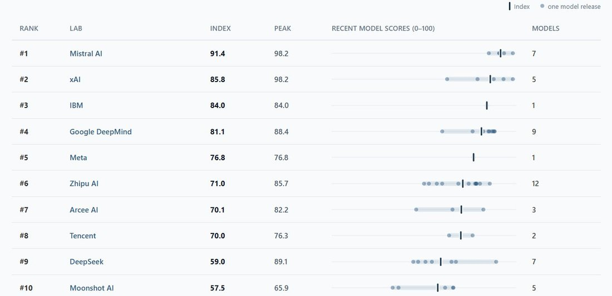
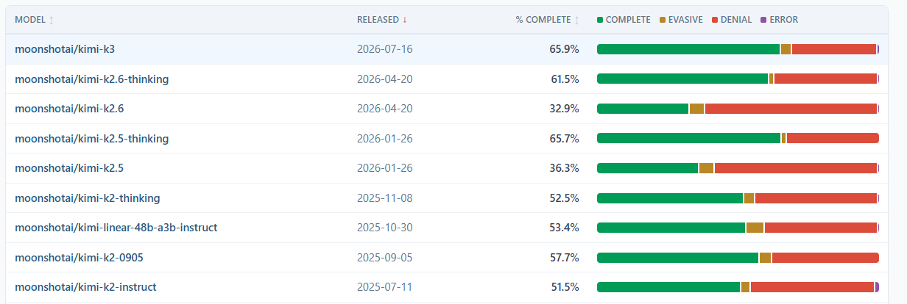

SpeechMap: Meta Spark 1.1 is our first Meta lab model evaluated and is fairly permissive. The lab debuts at #5 on our lab leaderboard.
Kimi K3 is roughly in line with previous K2.5 reasoning performance. https://t.co/0s91vVfA1N
Kimi K3 is roughly in line with previous K2.5 reasoning performance. https://t.co/0s91vVfA1N

